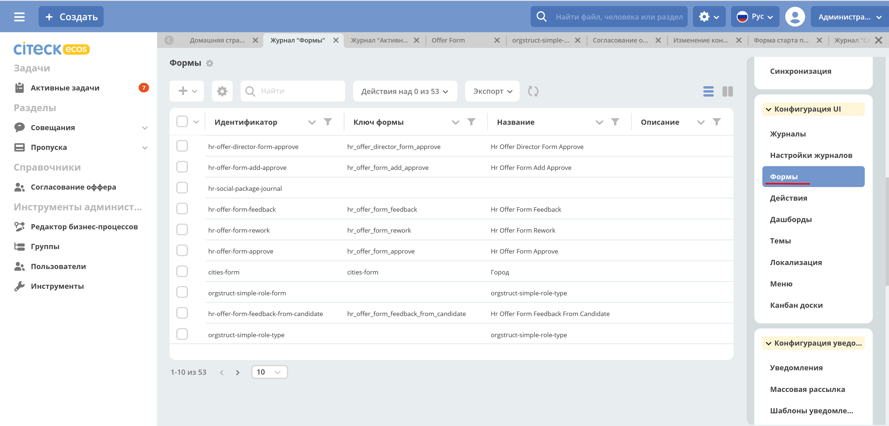
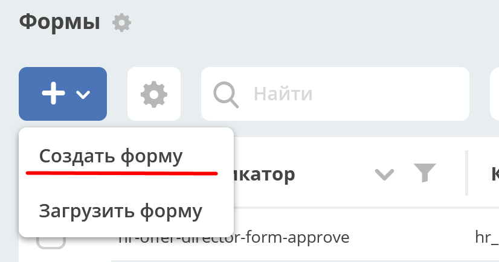
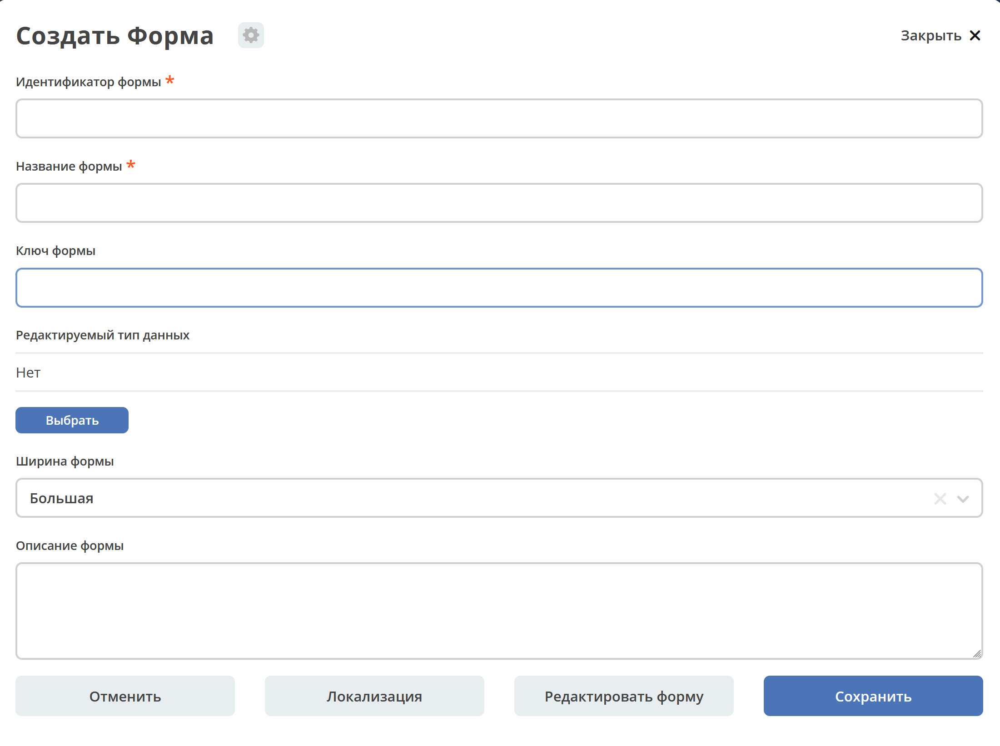
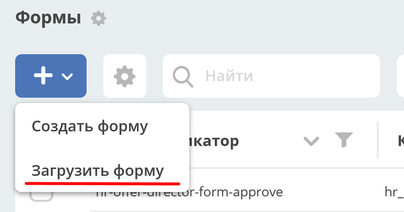
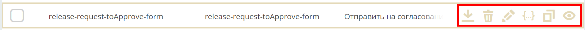
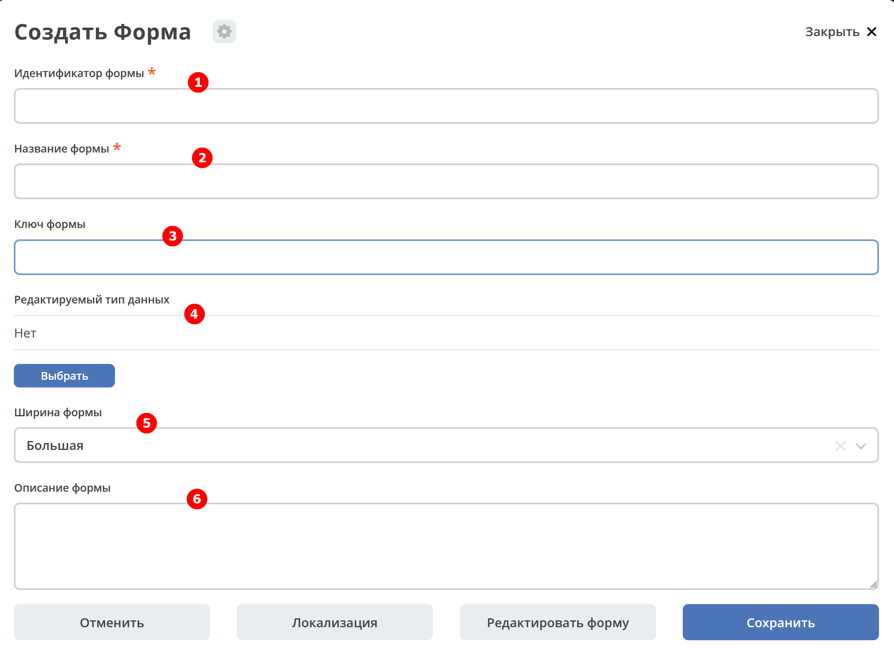
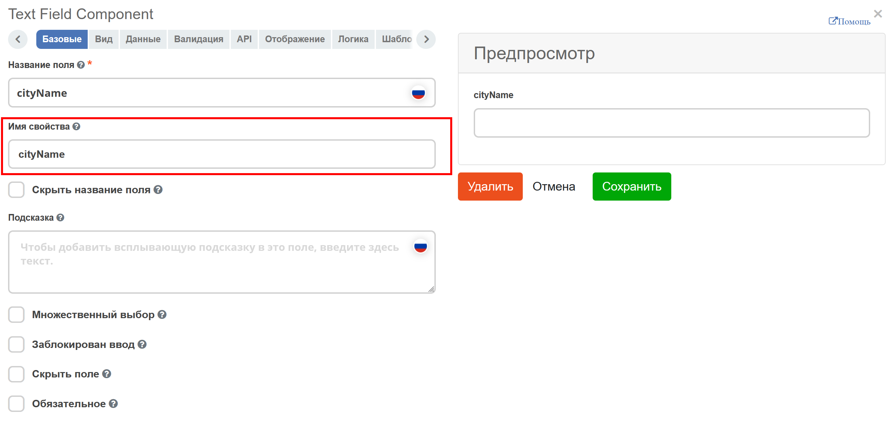
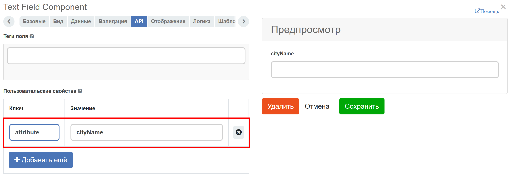

Общая информация
Форма - графическое представление объекта в виде набора элементов интерфейса для манипуляции данными объекта. Элементы интерфейса ссылаются на атрибуты, заданные в типе данных.
Формы ECOS реализованы на базе движка formio.js.
Функция редактора форм доступна только в ECOS Enterprise.
Формы описываются в json-формате.
Формы используются для редактирования записей из Records Service см. ECOS Records. На бэкэнде редактирование записи может восприниматься как создание новой (например если не указан ID редактируемой записи).
Описание перехода к разделу через интерфейс
Для просмотра существующих форм и их редактирования создан журнал Формы (Раздел администратора - Конфигурация UI - Формы):
{kind=link}
Варианты получения экземпляра формы
Форму можно создать или загрузить уже созданный в систему.
Создание
Подробнее см. раздел ниже
Для создания журнала необходимо нажать + - Создать форму:
{kind=link}
Откроется форма создания формы:
{kind=link}
Загрузка
Для загрузки созданного журнала необходимо нажать + - Форма:
{kind=link}
Файл формата .json
Пример описания формы
{
"id": "vacation-request",
"formKey": "",
"title": {
"ru": "Заявление на отпуск"
},
"description": {},
"customModule": "",
"typeRef": "",
"width": "m",
"system": false,
"i18n": {},
"definition": {
"components": [
{
"type": "datetime",
"input": true,
"enableTime": false,
"key": "from",
"label": {
"ru": "Начинается с"
},
"suffix": true,
"format": "yyyy-MM-dd"
},
{
"type": "datetime",
"input": true,
"enableTime": false,
"key": "to",
"label": {
"ru": "Заканчивается"
},
"suffix": true,
"format": "yyyy-MM-dd"
},
{
"label": {
"ru": "Инициатор"
},
"key": "initiator",
"allowedAuthorityType": "USER",
"currentUserByDefault": true,
"refreshOn": [],
"optionalWhenDisabled": false,
"type": "selectOrgstruct",
"input": true,
"defaultValue": ""
},
{
"type": "columns",
"key": "buttons-columns",
"columns": [
{
"md": 3,
"type": "column",
"input": false,
"index": 0,
"components": [],
"key": "column"
},
{
"md": 3,
"type": "column",
"input": false,
"index": 1,
"key": "column",
"components": []
},
{
"md": 3,
"type": "column",
"input": false,
"index": 2,
"components": [
{
"type": "button",
"key": "cancel",
"label": {
"ru": "Отменить",
"en": "Cancel"
},
"action": "event",
"event": "cancel",
"block": true,
"input": true
}
],
"key": "column"
},
{
"md": 3,
"type": "column",
"input": false,
"index": 3,
"components": [
{
"type": "button",
"theme": "primary",
"key": "submit",
"label": {
"ru": "Сохранить",
"en": "Save"
},
"block": true,
"input": true
}
],
"key": "column"
}
],
"input": false
}
],
"formId": "vacation-request"
},
"attributes": {}
}
Доступные действия с записью
В журнале администратору с каждой записью доступен стандартный набор действий:
{kind=link}
скачать в виде json-файла;
удалить;
открыть на редактирование;
редактировать json-файл;
копировать;
открыть карточку в соседней вкладке. Карточка представляет собой дашборд:
{kind=link}
Создание новой формы
{kind=link}
п/п |
Наименование |
Описание |
Пример заполнения |
|---|---|---|---|
1 |
Идентификатор формы* |
уникальный идентификатор формы (обязательное) |
test-form (kebab-case) |
2 |
Название формы |
имя формы (обязательное) |
Test form |
3 |
Ключ формы |
ключ формы. Используется для связи между формой и сущностью, которую трудно привязать к типам ECOS или напрямую связать. Обычно это старые задачи (flowable/activiti). |
test-form |
4 |
Редактируемый тип данных |
из списка выбрать :ref:тип данных <data_types_main>, созданный ранее |
выбирается из списка предлагаемых |
5 |
Ширина формы |
выбор варианта ширины формы |
выбирается из списка предлагаемых |
6 |
Описание формы |
поля для ввода описания формы |
Форма создана для… |
Нажать кнопку «Редактировать форму». Откроется конструктор форм
Связь с типом ECOS
В типе ECOS предусмотрено поле formRef, которое определяет связь типа с формой. В большинстве случаев этого поля достаточно, но если для одного типа требуется несколько форм (например, для отображения на дашборде), то в конгфигурации формы предусмотрено поле typeRef.
Связь без типа ECOS
Если запись не может быть привязана к определенному типу ECOS, можно воспользоваться привязкой по ключам.
Запись должна отдавать атрибут _formKey и по полученным ключам идет поиск формы до первого совпадения.
Если записи принадлежат одному типу или тип отсутствует, но для некоторых записей должна использоваться определенная форма,
можно реализовать атрибут _formRef. Если этот атрибут вернул ссылку на форму, то она имеет наибольший приоритет.
Связь с атрибутом записи
Для простых полей мы можем во вкладке Базовые выставить Имя свойства в соответствии со свойством записи:
{kind=link}
но если нужно связать с атрибутом, в котором есть спец символы (например «:»), то во вкладке API следует добавить в Пользовательские свойства свойство (2) с ключом attribute и значением - именем атрибута.
{kind=link}
Пользовательский модуль
В json описании формы можно добавить поле customModule, в котором записать путь до javascript модуля, который будет создан вместе с формой. В этом модуле можно разместить сложную логику, которую в последствии вызывать из скриптов формы. Для примера см. ecos-eform-repo/src/main/resources/alfresco/module/ecos-eform-repo/ecos-forms\ecos-form.json
Если в customModule будет метод init, то он будет вызван с текущей формой в аргументах.